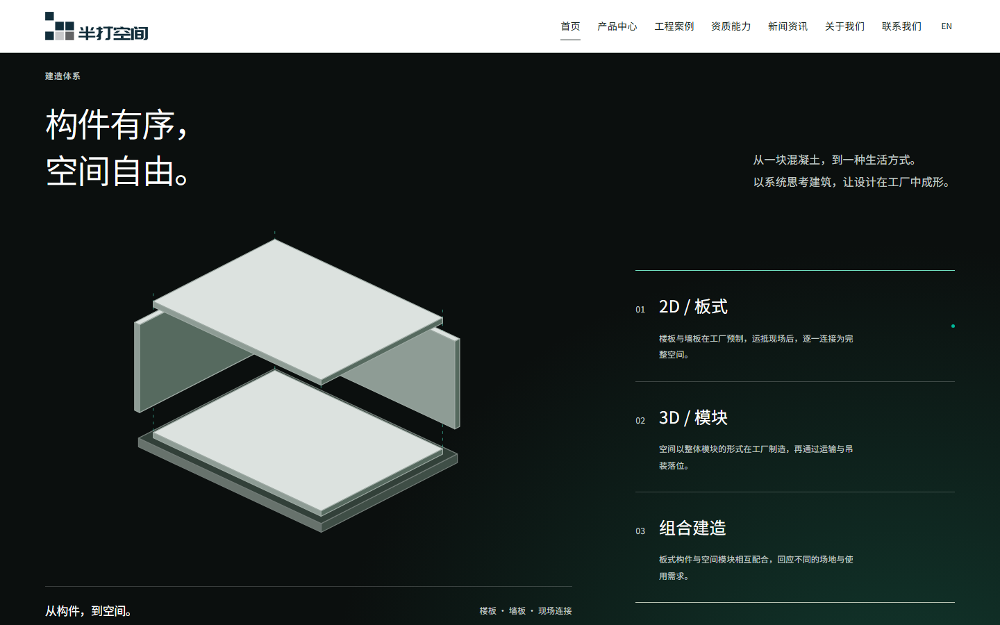
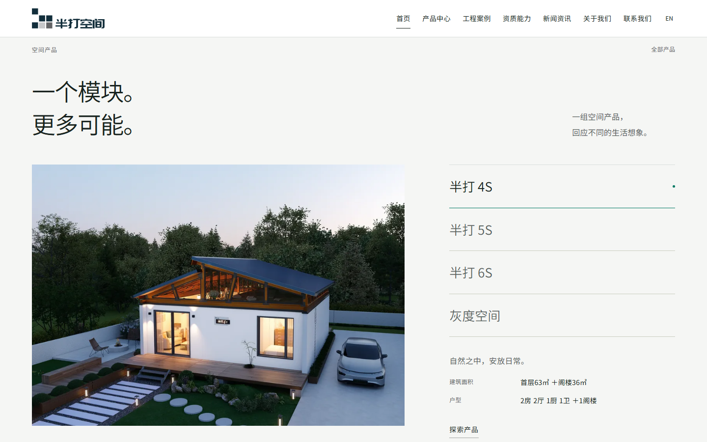
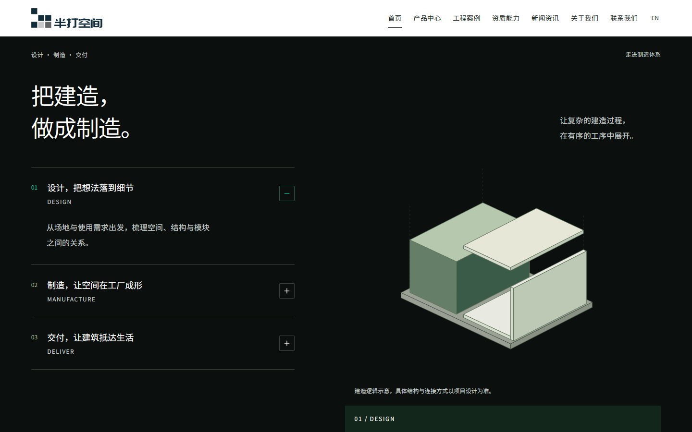
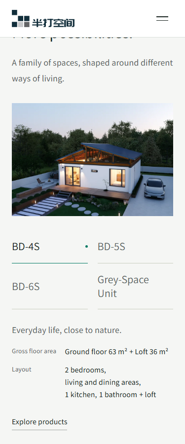
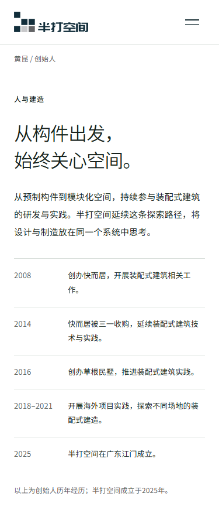

半打空间 · r29 · 2026-10-10局部优化与再次验收
本轮约定范围内通过。上一轮四项验收问题已关闭。
保留整体视觉、Logo 配色、满幅首屏、正文原比例图片和六款产品内容。此次调整集中在说明文字、双语提示、参数摘要及制造流程的图文对应。
01 · 深色文字可读性
通过组件级颜色变量消除历史覆盖，三种构造说明的保守对比度提高到 7.75:1；辅助文字保持 12px。

02 · 英文提示完整
入口仍显示 EN / 中文；英文页面的悬停与辅助提示改为英文。31 个内容页的链接与两套菜单复核通过，翻译残留为 0。
03 · 参数与年份排版
主张、面积和户型分开呈现，四款切换同步更新，避免单独的“1阁楼”落行；时间线年份保留完整。

04 · 设计、制造、交付各自对应
设计使用复用的组合建造示意，保留概念说明；制造使用工厂实拍，交付保留吊装照片。没有增加未经提供的业务事实。

手机与双语复核
英文摘要按独立字段和完整词组换行；中英文时间线区间不拆行。


本轮新测试结果
- 48 项单元测试、46 项素材检查、代码检查通过；类型 0 错误、0 警告，4 个测试脚本类型提示保留。
- 33 个页面 × 9 类视口，共 297 项布局检查全量复测通过。正文无裁切、内部填充条、拉伸、破图或横向溢出。
- 88 项英文布局、30 组中英文自动无障碍检查通过；渐变/照片背景的人工判定边界保留。
- 40 次产品切换、30 个深色示意状态、10 个双语年份布局专项检查通过。
- 12 组交互回归通过，含轮播、技术阅图、视频手动播放及本地需求下载；案例 7/3/10 筛选及三组二维码复核通过。
- 公网再次通过 40 次产品切换、30 个示意状态与 10 个年份布局检查；发布版本与本地构建一致，r28 保留回退。
首次 4S/320px 检查在响应式图片请求未完成时记录失败。测试已补充最终请求完成等待，仍检查 naturalWidth 以识别真实破图；原始失败记录保留，297 项全量重跑通过。
交付边界
本轮为 Windows Edge/Chromium 测试；未验证实机 Safari/iOS/Android、读屏和真实弱网。200% 使用等效视口。6S 室内图、新闻招聘资料仍待补充；正式域名、HTTPS 和发送服务沿用原范围。报告不等于奖项或全面无障碍认证。
中文临时站 · 英文临时站 · 完整验收数据